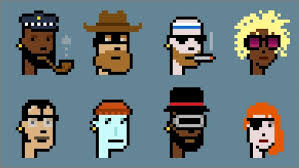

NFTs são bens não tangíveis, são diferentes tipos de "produtos" criados por diferentes tipo de pessoas que são colocados a venda em um marketplace específico e depois de adquiridos se tornam propriedades do comprador.
O que é, exatamente, que a pessoa que paga por um NFT está comprando?
Está comprando um certificado de autenticidade a respeito daquele bem não tangível, a pessoa não está comprando aquele produto em si, e sim os direitos sobre ela.
Exemplos de NFT's
O que é e como funciona a tecnologia do Bitcoin?
O Bitcoin funciona com a tecnologia de Criptografia, cada nova transação com o Bitcoin precisa ser registrada no blockchain para garantir que aquela mesma moeda não será usada novamente e uma outra transação. A mineração é a criança de novas moedas digitais através de resoluções matemáticas muito complexas, e os que fiscalizam as transações do Bitcoin através do blockchain são os chamados mineradores, eles oferecem a grande capacidade de seus computadores para essa fiscalização e recebem as moedas digitais como recompensa.